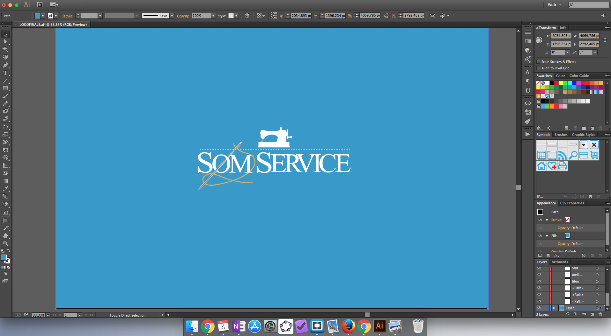
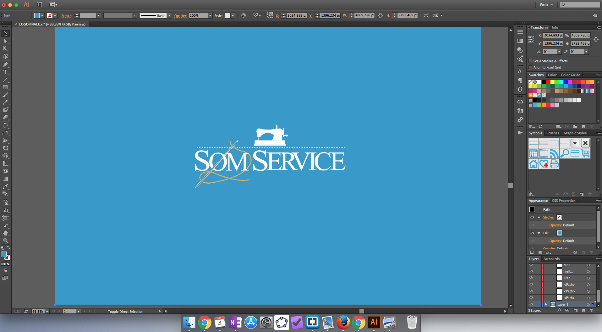

SVG (Scalable Vector Graphics) er i likhet med MathML et markup-språk basert på XML. SVG lar oss vise grafikk ved å beskrive to-dimensjonale vektorer som html-tekst. Dette har helt unike fordeler når det kommer til oppløsning, filstørrelse og responsivitet.
Det finnes mange programmer man kan bruke for å lage vektorer. Nedenfor følger en SVG laget i Adobe Illustrator.
 
